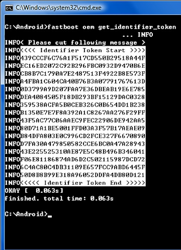
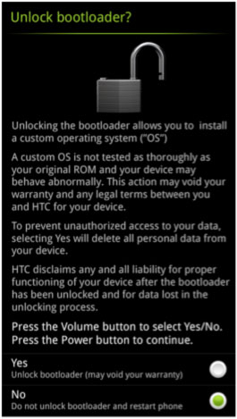

Каждый
телефон с ОС Android имеет бутлоадер (загрузчик), который проверяет
ядро операционной системы для загрузки в нормальном режиме. Но вы
должны понять одну вещь, что хоть Android- открытая платформа, но все
устройства (HTC в т.ч.) имеют свою собственную версию бутлоадера,
специфичную для его оборудования. Бутлоадер обычно сложно закодирован и
лежит в недоступном разделе, поскольку производители хотят, чтобы Вы
придерживались версий Android, специально предназначенных для
устройства. Но под напором пользователей HTC выпустила офицальный метод
разблокировки бутлоадера. Если вы хотите установить кастомную прошивку,
кастомное ядро или кастомное рекавери, Вам нужно чтобы Ваш загрузчик
был разблокирован. Говоря простым языком: разблокировка загрузчика
позволяет модифицировать устройство под свои требования. НО при этом
теряется гарантия на Ваш телефон.
Разблокировка загрузчика устройств HTC
1)Для начала нужно зарегистрироваться на htcdev.com/, после регистрации проверьте, установлены ли драйвера на Ваш ПК, и только потом приступайте к процедуре разблокировки2) Извлеките и установите заново аккумулятор. P.S.
Если Вы имеете устройство, в котором технологически нельзя извлечь
аккумулятор, то тогда в настройках устройства найдите пункт "Быстрая
загрузка" (обычно расположен в пунктах, связанных с батареей) и снимите
с него галочку, потом выключите устройство. 3) Зажмите одновременно и держите кнопки питания и уменьшения громкости.
4) При помощи клавиш регулировки громкости звука выберите пункт «Fastboot» и нажмите кнопку питания.
5) Соедините ваш аппарат с компьютером при помощи USB-кабеля.
6)
Скачайте и распакуйте архив с ADB и FASTBOOT (ссылку на скачку можно
найти в инструкции "Вступление для новичков") в папку C:/Android.
7) Откройте командную строку
8)
В командной строке перейдите в папку с скачанными файлами ADB и
Fastboot (например, если Вы распаковали скачанный архив в пункте 6 в
папку C:/Android, то введите в командной строке «cd c:/Android»)
9) Введите в командной строке fastboot oem get_identifier_token10)
Теперь необходимо нажать правую кнопку мыши, выбрать «пометить»,
выделить блок и нажать правую кнопку для копирования. Как на фото ниже

Затем необходимо перейти на htcdev.com/bootloader,
пролистать до Step 10, вставить в поле My Device Identifier Token ваш
ключ, который только что копировали из окна командной строки и нажать
Submit. 11)
Спустя несколько секунд на адрес электронной почты, указанный при
регистрации, придет сообщение с ключом разблокировки в прикрепленном
файле — Unlock_code.bin. Сохраняем файл в папку с ADB/FASTBOOT и прочим необходимым ПО (в примере — C:/Android) 12) Вводим в командную строку fastboot flash unlocktoken Unlock_code.binНа экране аппарата отобразится другое сообщение (Как на скрине). Нажимаем кнопку громкости + и подтверждаем кнопкой питания

13) Загрузчик (бутлоадер) разблокирован!
Обратная блокировка загрузчика устройств HTC
1)Извлеките и установите заново аккумулятор. P.S.
Если Вы имеете устройство, в котором технологически нельзя извлечь
аккумулятор, то тогда в настройках устройства найдите пункт "Быстрая
загрузка" (обычно расположен в пунктах, связанных с батареей) и снимите
с него галочку, потом выключите устройство. 2) Зажмите одновременно и держите кнопки питания и уменьшения громкости.
3) При помощи клавиш регулировки громкости звука выберите пункт «Fastboot» и нажмите кнопку питания.
4) Соедините ваш аппарат с компьютером при помощи USB-кабеля.
5)
Скачайте и распакуйте архив с ADB и FASTBOOT (ссылку на скачку можно
найти в инструкции "Вступление для новичков") в папку C:/Android.
6) Откройте командную строку
7)
В командной строке перейдите в папку с скачанными файлами ADB и
Fastboot (например, если Вы распаковали скачанный архив в пункте 6 в
папку C:/Android, то введите в командной строке «cd c:/Android»)
8) Введите в командной строке fastboot oem lock10)Загрузчик заблокирован! Эта
операция не восстановит стандартную блокировку, а просто блокирует его,
запрещая любые дальнейшие изменения. Следовательно гарантия на
устройство назад уже не возвратится! Для повторного открытия потребуется повторить инструкцию по разблокировке, расположенную выше.